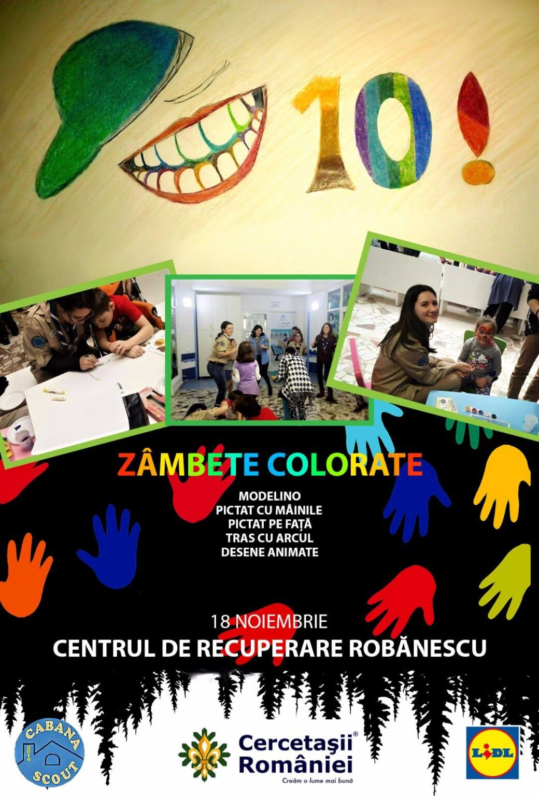
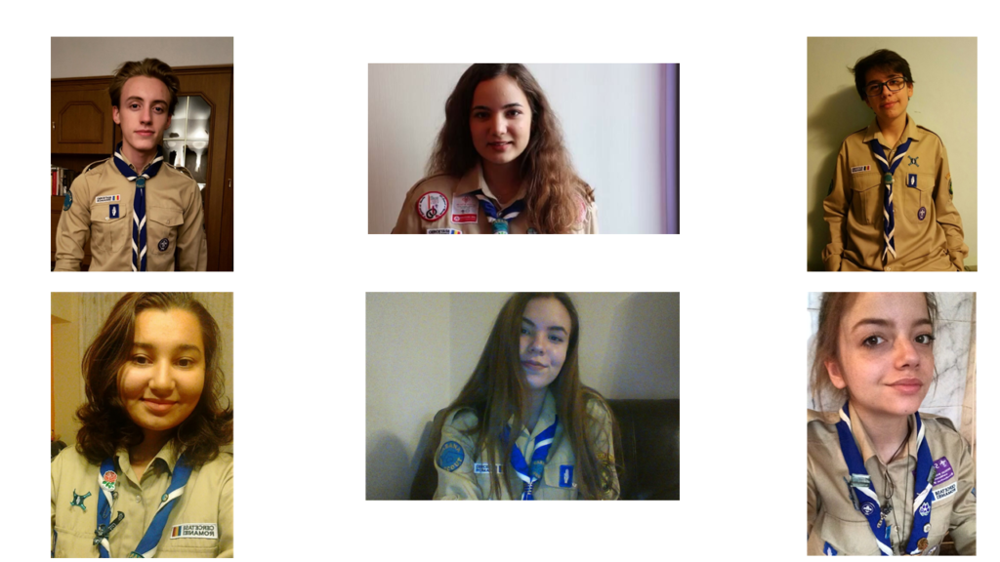

Proiect „Zâmbete colorate"

Sâmbăta, 18 noiembrie, tinerii cercetaşi aparţinând centrului nostru local desfăşoară, cu susţinerea LIDL-“Meriţi să fii surprins” o zi de ateliere pentru copiii din Centrul Naţional Clinic de Recuperare “Dr. Nicolae Robănescu”. Proiectul intitulat “Zâmbete colorate” promite să lase un exemplu de umanitate, în speranţa de a schimba prejudecăţile cu privire la copiii cu dizabilităţi.
Copiii internaţi în centrele de recuperare nu au ocazia de a se bucura de copilăria lor şi de li se oferi motive de a zâmbi. Din acest motiv, ne propunem să aducem o rază de soare în vieţile lor, în cadrul a 5 ateliere care acoperă mai multe arii de dezvoltare. Activitatea va fi coordonată în totalitate de către noi, exploratorii, care dorim să lăsăm o urmă de speranţă în sufletul fiecărui copil.
Prin diferitele ateliere- tir cu arcul, pictat pe faţă, modelino, proiecţie de desene animate, pictat cu mâna, la final creând împreună o pânză cu amprente colorate ale mânuţelor copiilor, vrem sa ii ajutam pe copii să realizeze că, în ciuda dificultăţilor, nimic nu este imposibil de realizat.

Despre sponsor:
“Lidl este prezent în 30 de ţări din toată lumea şi operează aproximativ 10.000 de magazine şi peste 140 de centre logistice în 27 de ţări din Europa.
Lidl are aproximativ 215.000 de angajaţi, dintre care 5000 în România unde retailer-ul german are deschise peste 200 de magazine şi 4 centre logistice. Misiunea Lidl în România este aceea de a le oferi zilnic românilor, în zone din imediată lor proximitate, produse de calitate la cel mai bun preţ, direct de la producători, într-o largă varietate de sortimente.”